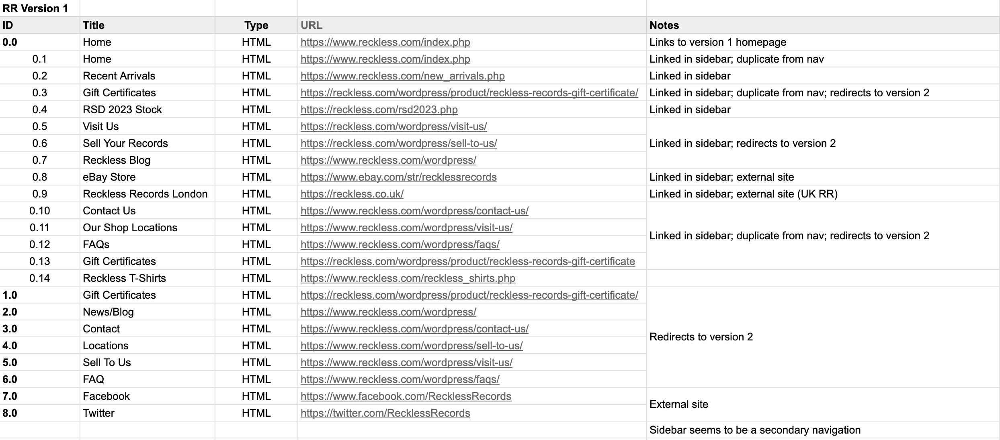
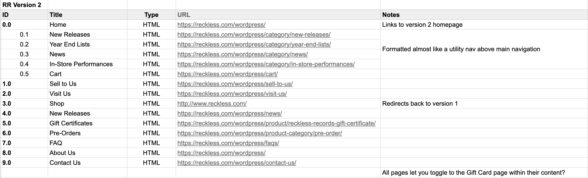
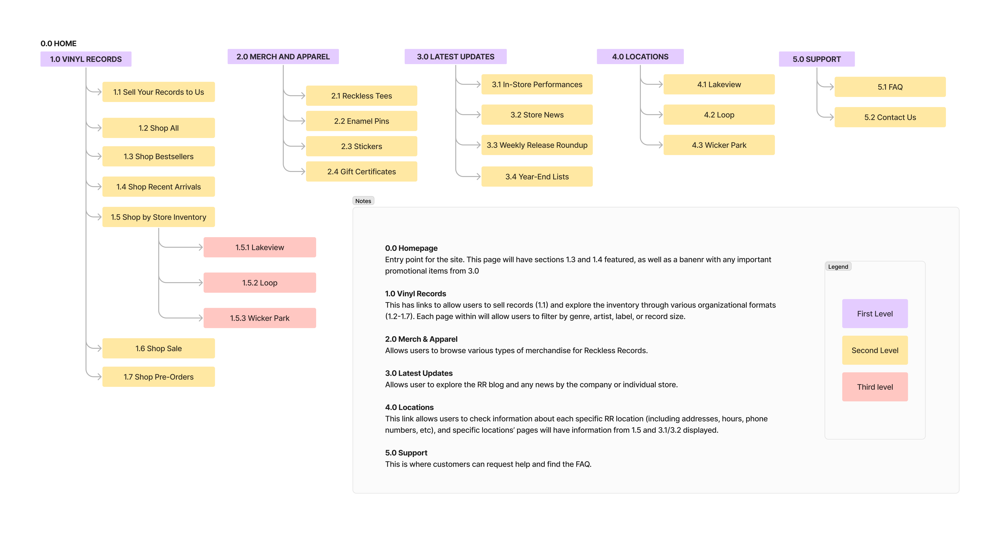
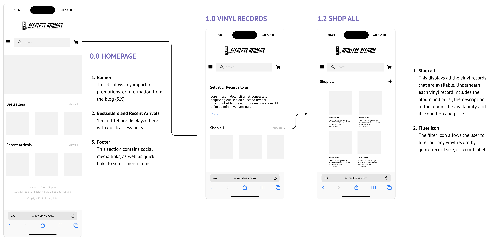
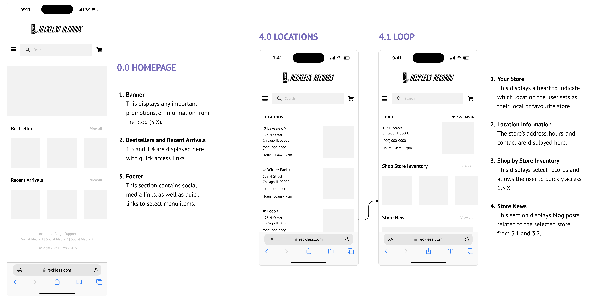

Restructuring the information architecture of a local record store's website.
Information Architecture / 2024 / DePaul HCI 457

What is Reckless Records?
Reckless Records is a London-based record store with three locations in Chicago. They don't currently do e-commerce, but their website does list all the records in their inventory and the location they're available at.
Reckless Records’ inventory navigation is nearly entirely restricted to searches, with navigation for three general categories and informational links. Some links also redirect to a different version of their website with additional navigation items.
This project for HCI 457 aims to enhance Reckless Records’ online presence and user experience by reworking its information architecture and content strategy.
There were several duplicate navigational items across the sites and insufficient options for browsing through records.
 Adapting old content into a new sitemap
Following the content inventory, I free-listed all possible content items and used those as a basis for the new IA. I conducted an open card sort with 30 cards for the pilot, and two primary rounds with 22 cards each. I also conducted two rounds of tree testing. All changes to my initial IA draft are listed below.
The distinction between two pairs of categories was unclear in the card sort.
Several cards were interchangeably misplaced within both pairs.
Several card names were vague and unnatural in the card sort.
Users don't think in genres. Some items would be better suited as filters or search queries.
All tree test tasks had success rates of 95% or higher.
The changes from our pilot test set us up for success and validated our changes.
Shopping for records
Here, I aimed to provide access to all available records on the same website as everything else (no second version this time!). I also added functionality to shop by specific preferences (e.g. genres or record sizes) on the same page through sorting or filtering, rather than through the navigation as before.
Finding location information
The goal of this wireframe was to create a more direct path to the location information than the existing website. My wireframe also consolidated additional information about each location that was previously scattered, such as a store’s news or inventory. One change I made here between iterations was adding the “favorite store” feature, which would especially benefit users when going through different task flows.
What did I learn?
✽ Content inventories are so important! There are so many links scattered throughout websites and if left unchecked, they can get messy, both internally and for users. Relatedly, not every link needs to live in the nav 😅 Sorting and filtering are necessary tools.
✽ Recruiting participants consistently is tough. There were times where getting enough participants was a challenge, so I had to learn to utilise whatever avenues I had at my disposal.
What's next?
✽ I'd love to test with a larger sample size, ideally including more returning users.
✽ It would also be interesting to develop the wireframes further at some point!